population65AndAbove <- get_decennial(
geography = "block",
variables = c(Aged65To74_Owner = "H13_009N",Aged65To74_Renter = "H13_019N", Aged75To84_Owner = "H13_010N", Aged75To84_Renter = "H13_020N",Aged85Over_Owner = "H13_011N", Aged85Over_Owner = "H13_021N"),
state = "IA",
county = "Polk",
year = 2020,
geometry = TRUE,
sumfile = "dhc"
)Alister’s Midpoint Blog
Midpoint Reflection
Learning Journey
As I reflect back to my first 5 weeks of DSPG, little did I realized how much technical and non-technical knowledge that I have been able to grasp in this short period of time. And the lists below are some of the pieces of my learning journey thus far:
Data Exploration
Coming into DSPG, I do not have much experience in looking through raw data and sourcing through the Internet for suitable data. Being part of DSPG has opened up opportunities for me to hone my skill in data sourcing. I was also introduced to various platforms such as the U.S Census Bureau Data, Census Reporter and etc to look for datasets that best fit my project. My biggest realization from data sourcing is that it is one of the most crucial skill as having a credible and suitable dataset is the foundation to a successful data science project.
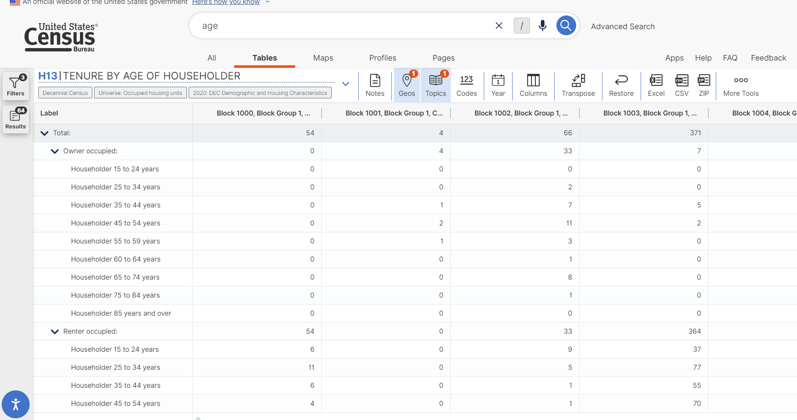
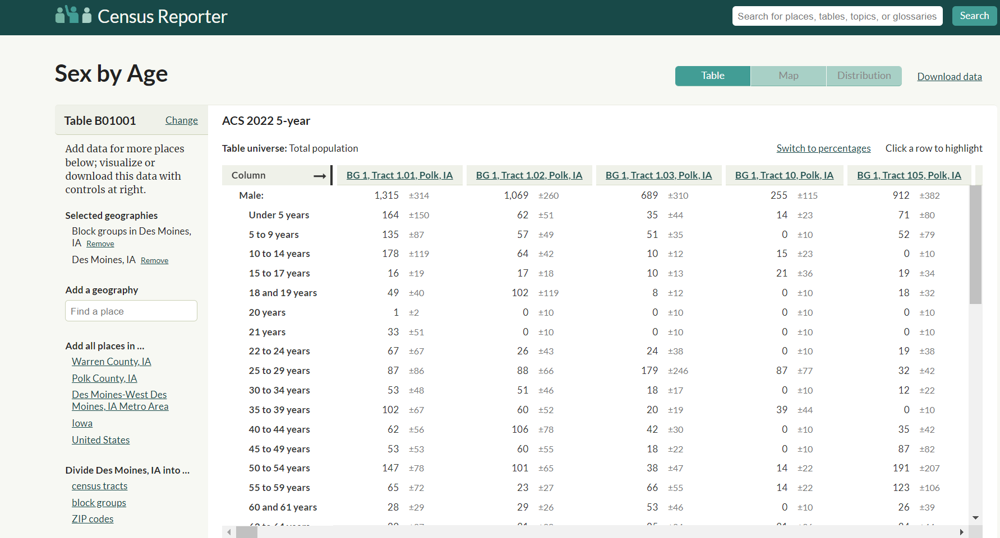
- Data Analysis and Data Visualization through R
Coming into DSPG, I have not yet had the chance to learn R but throughout the program, I had the chance to go through several R courses and most importantly able to have first hand experience in using R for data analysis and data visualization, specifically on the data from Decennial and American Community Survey (ACS). The example below is one of the data extraction process that I did by taking the decennial data of the number of seniors in the Des Moines Blocks and using the data to plot a mapview of the distribution of total seniors across different blocks.
mapview(population65AndAbove,
zcol = "value",
layer.name = "Aged 65 and Above",
cex = "value", # Use the population value to scale the size of the dots
alpha = 0.7,
legend = TRUE)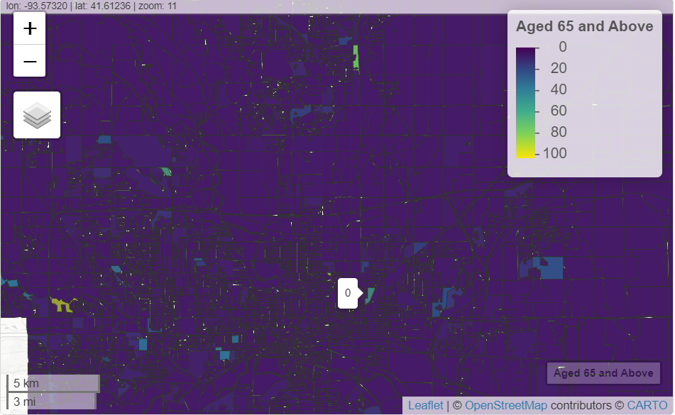 3. Navigate through GitHub
- Learning GitHub skills through interactive courses (Pull request, Commit, Create a new repository)
- Transition into collaborative group work with team members using GitHub
{width="399"}Image Preprocessing through Python
Thresholding (Converting grayscale images into binary images for better analysis)
Edge Detection through Sobel and Canny
Gaussian Smoothing (Blur image and reduce contrast)
Image Transformation (Rotating, Rescaling, Aliasing, Resizing)
Finding Contours
After going through a datacamp course on image processing, I have the chance to put that into practice by working on extracting features from a Sanborn Map. Firstly, I load the image and convert the image to grayscale for further processing. I will then use Gaussian filtering to reduce constrast of the image and apply thresholding. To extract the buildings from the image, I applied the edge detection technique using Canny and apply Contours on the edge of the buildings.
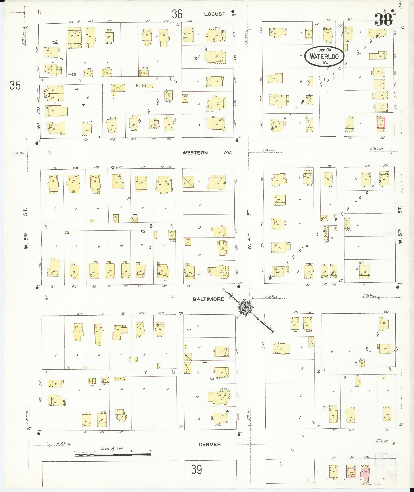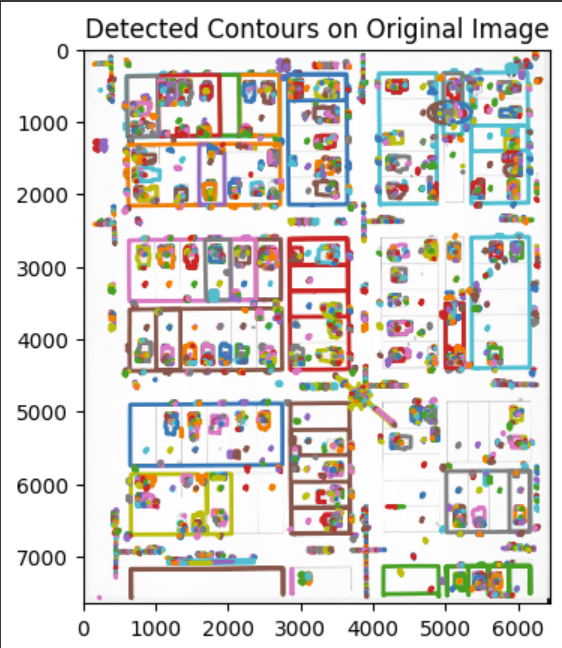 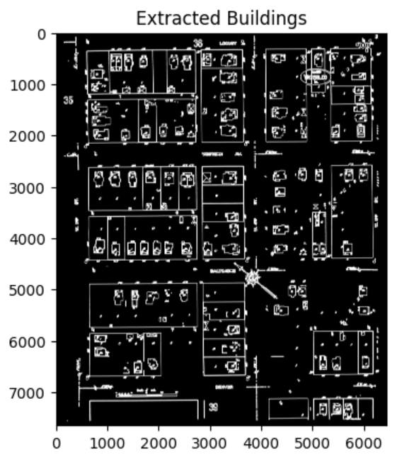
llamaindex
Llamaindex is a data framework for connecting custom data sources to large language models (LLMs). The idea is to incorporate Llamaindex in the Housing and AI project where a user ask a query and the model is able to perform intelligent searching of data and provide a suitable response.
After taking several tutorials on Llamaindex, I have a clearer understanding on the implementation and flow of the system as shown below:

Also, I had the opportunity to implement Llamaindex on both the structured and unstructured datasets for the Housing project. While working with the unstructured data, I was able to implement both the Vector Query Engine and the Summary Query Engine, and using a Router Query Engine where it will choose the suitable query engine depending on the query. Some of the codes and the results are shown below:
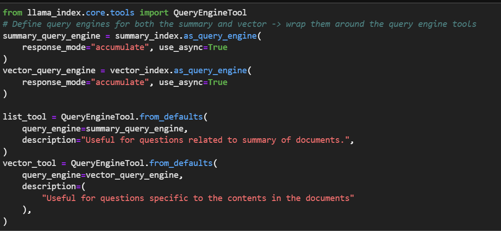
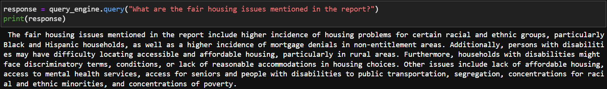
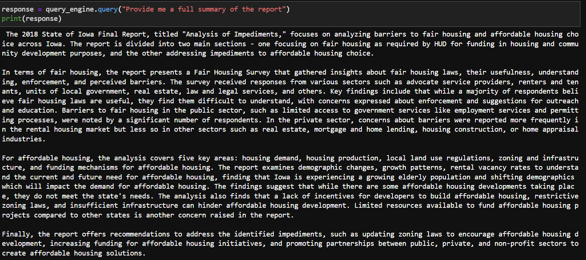
While dealing with structured data such as a CSV data file, I implemented a Pandas Query Engine where it is able to take in a query from the user, perform pandas operation and provide an output as shown below:
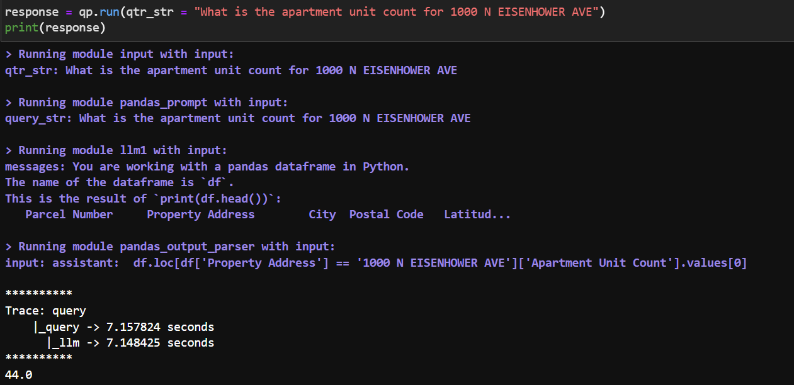
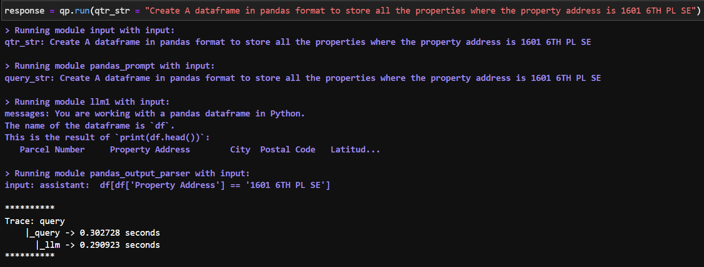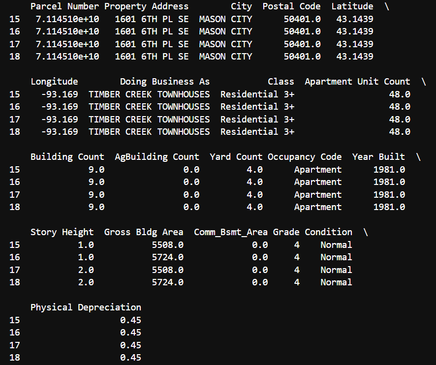
New Learning Direction
During the program, I’ve pursued new directions in learning and not being afraid to step out of my comfort zone in pursuing new tools such as image processing and Llamaindex. Also, I have understand the importance to reading and understanding the documentation, something that is often overlooked. Besides, one major learning curve from the program is being accountable of your own work and learning to explore the abundance of online resources or seek help from others whenever encountering any problems.
Skills To Improve For The Rest Of The Program
Continue to improve using R for data analysis and visualization especially in plotting maps
Familiarize with the Llamaindex documentation and able to apply advanced concepts and customization for my query system
Convey the data findings and interpretations in a more accurate and concise way
Actively participate and contribute ideas during meetings
Goals Outline
Truth be told, DSPG has exceeded my expectations during these 5 weeks. I felt that I have grown so much and the learning progress has given me a clearer idea on my career pathway as a data scientist. Reflecting on my initial goals, I believe I am on the right track as the program has significantly advanced my technical capabilities and provided a solid foundation in data science practices. After a few weeks into the program, I found myself gaining valuable first hand experience into the job scope of a data scientist, and the opportunity to meet with clients and experts in different fields helped prepare me for the working world. While there is always room for improvements, I am confident that the skills and experiences gained from the program will greatly benefit me in the long run.